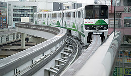
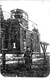

|  | Монорельс в Токио, Япония |
| Привод | Электродвигатель |
| Период | с середины XIX века |
| Скорость | 40 км/ч |
| Область применения | парки развлечений, общественный транспорт |
| Инфраструктура | эстакада, станции |
Монорельсовая система делится по способу подвеса состава на подвесную, опорную и с боковым подвесом.
Монорельс системы Лартига
Транслёр
Первый монорельс в мире появился в 1820 году в России. Тогда житель села Мячково в Подмосковье Иван Эльманов построил «Дорогу на столбах» — по верхнему продольному брусу катились вагонетки, которые тянули лошади [1].
Немногим позже, независимо от русского изобретателя, монорельс схожей конструкции был изобретён в Великобритании Генри Робинзоном Пальмером. Он запатентовал своё изобретение 22 ноября 1821 года. В 1824 году в Великобритании был построен первый действующий монорельс. Он использовался на военно-морской верфи исключительно для перевозки грузов.
Первый пассажирский монорельс в мире был открыт 25 июня 1825 года. Он был устроен по принципу Пальмера.
После этого в течение примерно полувека ничего нового в области строения монорельса не происходило. Попытки создать работоспособный монорельс, теперь уже на паровой тяге, возобновились в конце XIX века. Известно, что в 1872 году на политехнической выставке в Москве демонстрировался участок монорельсовой дороги конструкции инженера Лярского. В 1876 году паровой монорельс демонстрировался на выставке Centennial Exposition в США. Длина трассы монорельса составляла 170 ярдов (около 150 м)[2].
В общем в конце XIX века монорельс был частым гостем на разнообразных выставках. В 1872 году монорельс на кабельной тяге демонстрировался в Лионе, в 1891 году в Сент-Луисе демонстрировался монорельс с вагонами наподобие трамвайных.
В то же время создание действующего, работоспособного монорельса оказалось гораздо более сложным делом. В XIX веке было создано огромное количество конструкций монорельса, но большинство из них так и остались на бумаге, а те, которые были реализованы, не отличались долголетием. В 1878 году начал действовать паровой монорельс, соединяющий Брадфорд и Гилмор (Пенсильвания)[3]. Его длина составляла 6,4 км. Этот монорельс создавался для перевозок промышленного оборудования, но он также перевозил пассажиров. Брадфордский монорельс закрылся вскоре после случившейся 27 января 1879 года серьёзной катастрофы, когда погиб машинист монорельса и три его пассажира.
С развитием электротехники на монорельсах стали использовать электрический привод. Одна из первых электрических монорельсовых дорог, известная как Enos Electric Railway, была построена в 1887 году в Гринвилей, Нью-Джерси.
Как уже было указано выше, несмотря на активные поиски, создать монорельс, способный быть полноценным транспортным средством, в XIX веке так и не удалось. Единственный успешный монорельс той эпохи — построенный в Ирландии в 1888 году монорельс, соединявший Баллибунион и Листоуэл. Он просуществовал до 1924 года. Однако распространения эта конструкция не получила (более подробно — см. Монорельс системы Лартига).
Первые монорельсы на конной тяге были подвесными. Паровые монорельсы имели своеобразную полуподвесную конструкцию: состав опирался на несущий рельс, стабильность обеспечивалась боковыми направляющими рельсами. Поперечный разрез такого пути напоминал букву «А», где верхняя точка соответствует несущему рельсу, а точки соединения боковых сторон и поперечной перекладины — направляющим. С появлением электрических монорельсов снова стала использоваться подвесная компоновка.
Однако предлагались и более необычные конструкции. В 1894 году в США была построена монорельсовая железная дорога Boynton Unicycle Railway [4]. На этой дороге поезд опирался на один несущий рельс, сверху же проходил поддерживающий деревянный рельс. Основным недостатком такой дороги было то, что на поворотах из-за инерции («центробежной силы») на поддерживающий рельс действовали высокие силы.
В конце XIX века появились опорные монорельсы. В 1886 году в США был построен опытный монорельс такого типа, Meigs Monorail, но в те времена распространения такая конструкция не получила.
В Токийском метро используются вагоны на шинном ходу, для страховки схода поезда с колес в случае разрыва шин, используется находящийся под днищем вагона монорельс, вполне возможным является использование в будущем на этих линиях монорельсовых вагонов.
Монорельсы применяются в следующих областях:
В Северной Америке есть три таких монорельса: в Сиэтле (см. Монорельс Сиэтла), Джексонвиле (см. Монорельс Джексонвилла) и Лас-Вегасе. Их общая длина — 14,8 км (1,5+7+6,3). В будущем планируется расширение монорельса в Лас-Вегасе. В то же время планы развития монорельса в Сиэтле были отвергнуты населением на референдуме из-за непомерно высокой стоимости. В Ньюарке действует монорельс, связывающий аэропорт, парковки и железнодорожную станцию (4,8 км). Самый протяжённый монорельс Северной Америки расположен в Диснейленде во Флориде. Протяжённость его трассы — 23,6 км.
В Австралии действует один монорельс, выполняющий функции ОТ. Этот монорельс, расположенный в Сиднее, имеет протяжённость в 3,6 км.
Совсем другая ситуация наблюдается в Азии. Здесь монорельс рассматривается как перспективный вид транспорта, строятся новые системы. Больше всего монорельсов-ОТ в Японии. Здесь такие монорельсы действуют в восьми городах. Самая большая монорельсовая система имеется в Осаке, её протяжённость — 23,8 км. Общая же протяжённость японских монорельсов-ОТ — 102 км. Некоторые из японских монорельсов по своему пассажиропотоку соответствуют метрополитену.
В Малайзии монорельс-ОТ действует в Куала-Лумпуре (с 2003 года, 8,6 км). Ещё в нескольких городах этой страны монорельсы-ОТ строятся. В Чунцине (Китай) с 2005 года действует монорельс протяжённостью 13,5 км. Монорельсы также строятся в Сингапуре (планируемая длина — 2,1 км), Джакарте (27 км), Объединённых Арабских Эмиратах, Тегеране, нескольких городах Китая.

Лесовозный монорельс, 1933 год
Первый российский монорельс был построен в 1820 году в подмосковном селе Мячково. Иван Эльманов построил «дорогу на столбах», на ней по верхнему продольному брусу катились вагонетки, которые тянули лошади.
Первая электрифицированная монорельсовая дорога в мире появилась в Гатчине Петербургской губернии в 1899 году по проекту инженера Романова.
В Москве первые попытки построить монорельс проводились в 1933 году. В парке им. Горького была создана уменьшенная действующая модель «аэропоезда Вальднера» — модель пассажирского вагона длиной 2.5 метра с двумя воздушными винтами, передвигавшегося на эстакадах по среднему рельсу. Вагон мог развивать скорость до 120 км/ч и работал даже тогда, когда из-за сильных снежных заносов в Москве вставали трамваи. В 1935 году у платформы Северянин был сооружён участок эстакады в натуральную величину.
В 1967 году планировалось построить разветвлённую линию подвесного монорельса от станции метро «Автозаводская» до станции «Коломенская». Был выпущен опытный вагон, который выставлялся на ВДНХ, но позднее внезапно оказалось, что на пути монорельса располагался посёлок Ленино — теперь это район Царицыно, ставший районом массовой жилой застройки, а с таким пассажиропотоком могло справиться только метро.(Этот абзац откровенный бред. Автор либо не знает географии Москвы, либо не умеет выражать свои мысли более четко.)
В начале 2000-х годов были проекты постройки монорельса в Воронеже, однако из-за высоких затрат на содержание монорельсовой линии они были отвергнуты.
20 ноября 2004 открыта первая публичная монорельсовая дорога в Москве в районе Останкино, с 10 января 2008 ставшая полноценным видом городского общественного транспорта. Особенность отечественной линии заключается в использовании составом уникального[источник не указан 260 дней] линейного двигателя.
В 2008 году появилась информация в прессе о планах по строительству в Ярославле предприятия по производству подвижного состава для монорельсовых дорог. Проект будет реализован с помощью французской компании «Транслор». Этот подвижной состав предполагается использовать в Нижнем Новгороде, Москве и Петербурге.[5]
К 2010 планируется открыть вторую линию монорельсовой дороги в Москве — от станции метро Краснопресненская до Кутузовской.